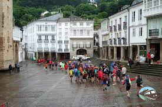

Rutas
1. Alto de Mondoñedo
Si buscas una ruta por el sur de Bogotá, considera Mondoñedo. “Puede salir por la Calle 13, saliendo por Mosquera y llega a Alto de Mondoñedo que tiene aproximadamente 4 kilómetros y 179 metros de subida”, recomienda Alejandro Vega, ciclista aficionado. El recorrido puede durar alrededor de 15 minutos para una persona principiante, y es una ruta que 28 mil personas han intentado, según datos de Strava, la aplicación usada por cientos de ciclistas para monitorear sus rutas y compartir resultados con la comunidad.
2. El Verjón
Por el centro de Bogotá, tomando la vía que dirige a Choachí se encuentra el Verjón. “Es una loma muy chévere, porque uno siente que se aleja de la ciudad, pero realmente no es tan retirado del casco urbano”, comenta Fernando Puentes, ciclista aficionado. Se trata de un puerto de montaña de aproximadamente 11 kilómetros que dura cerca de media hora. El recorrido es retador por sus 519 metros de subida y se recomienda “evitar horas pico porque suele haber mucho tráfico, sobre todo en la tarde, y hacerse los domingos o los jueves y viernes, que hay acompañamiento policial, ya que a veces hay inseguridad”, añade Vega.
3. El Alto del Vino
Saliendo por la Calle 80, puedes ir por Siberia y dirigirte al Alto del Vino. Una ruta que es retadora por la intensidad del viento y que cuenta con un par de pendientes inclinadas, pero sin duda un recorrido que se puede disfrutar y que 62 mil 634 personas han intentado, según Strava. “En esta ruta hay dos posibilidades, o subir solo el tramo de Bogotá al Vino, o bajar hasta La Vega y devolverse, son 28 kilómetros y es muy bacana”, comenta Fernando. 